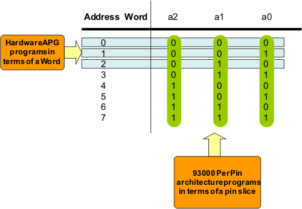
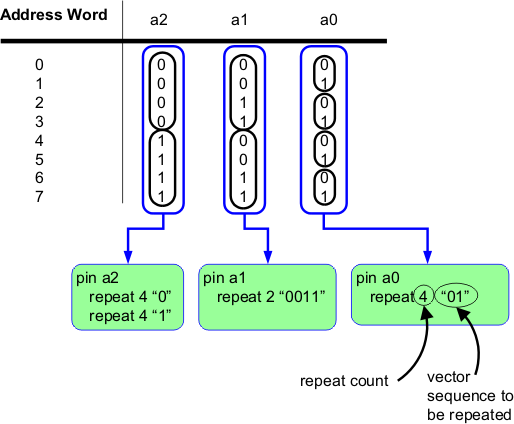
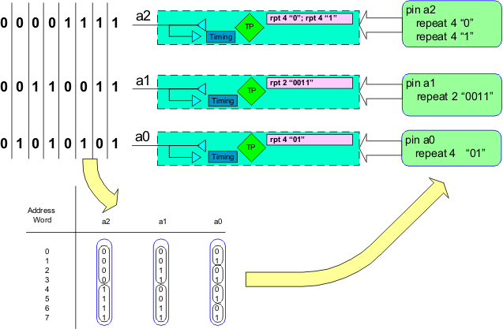

Word versus pin slice
One important difference between the V93000 test system architecture and a test system with an APG is in how the pattern information is created. In a hardware APG the address is loaded into a register and incremented. All of the operations the hardware APG performs are based on a word because they affect all of the bits of the word. The V93000 test system is a true per-pin implementation. Even the sequencer of each channel is independent, which means that a different sequencer program can be written for each channel of the test system. This allows the V93000 test system to program and generate the pattern using a pin slice analysis. The following figure shows the two pattern definition and generation perspectives.

Each pin exhibits a repeating sequence of ones and zeros. If the repeating sequences could be programmed they would appear as shown in the following figure.

The V93000 test system incorporates a test processor on every channel. The test processor is a microprocessor that is designed by Advantest specifically for this function. Among the test processor operations is a repeat command (RPT). This command can be used to program the needed repeat sequence into the channel memory of each channel (see following figure).

When the V93000 test system executes a memory pattern it executes a different sequence of repeat operations on each pin. From a device's perspective, the V93000 test system executes the same pattern as is executed using the hardware APG implementation.
The example shown in the figure above was a very short pattern. Most memory tests are for devices with address buses that are larger than 3 bits. But even if the address bus is wider than 3 bits the same repeating pattern will occur on each pin. The repeating sequence would be repeated more times so the repeat count would increase while the vector argument should stay the same. That is for a 15 bit address bus the address up count would start with 0 and end with 32,767. The repeat command for pin a0 would change from rpt 4 "01" to rpt 16384 "01". Notice it would still occupy the same amount of space in channel memory but would execute 32,768 test system cycles instead of 8 cycles.